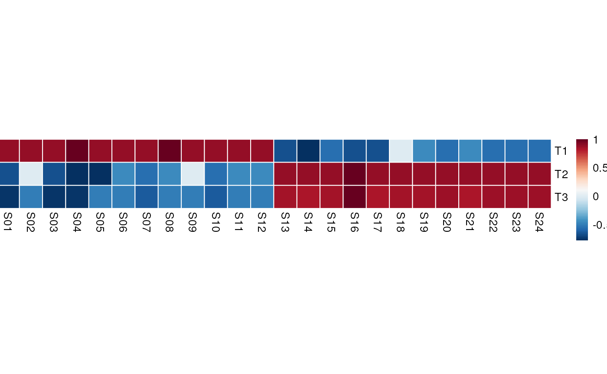
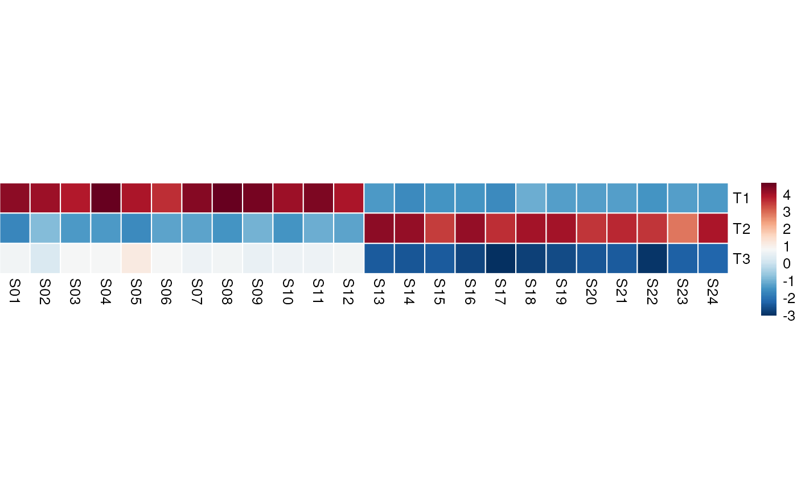

decoupleR - Ensemble of methods to infer biological activities
Pau Badia-i-Mompel
Heidelberg UniversiyJesús Vélez-Santiago
National Autonomous University of MexicoSource:
vignettes/decoupleR.Rmd
decoupleR.RmdInstallation
decoupleR is an R package distributed as part of the Bioconductor project. To install the package, start R and enter:
if (!requireNamespace("BiocManager", quietly = TRUE)) {
install.packages("BiocManager")
}
BiocManager::install("decoupleR")Alternatively, you can instead install the latest development version from GitHub with:
BiocManager::install("saezlab/decoupleR")Usage
decoupleR (Badia-i-Mompel, Vélez-Santiago, Braunger, Geiss, Dimitrov, Müller-Dott, Taus, Dugourd, Holland, Flores, and Saez-Rodriguez, 2021) contains different statistical methods to extract biological activities from omics data using prior knowledge. Some of them are:
- AUCell: (Aibar, Bravo Gonzalez-Blas, Moerman, Huynh-Thu, Imrichova, Hulselmans, Rambow, Marine, Geurts, Aerts, van den Oord, Kalender Atak, Wouters, and Aerts, 2017)
- Fast GSEA: (Korotkevich, Sukhov, and Sergushichev, 2019)
- GSVA: (H{ä}nzelmann, Castelo, and Guinney, 2013)
- viper: (Alvarez, Shen, Giorgi, Lachmann, Ding, Ye, and Califano, 2016)
In this vignette we showcase how to use it with some toy data.
Libraries
decoupleR can be imported as:
Input data
decoupleR needs a matrix (mat) of any molecular readouts (gene expression, logFC, p-values, etc.) and a network that relates target features (genes, proteins, etc.) to “source” biological entities (pathways, transcription factors, molecular processes, etc.). Some methods also require the mode of regulation (MoR) for each interaction, defined as negative or positive weights.
To get an example data-set, run:
data <- get_toy_data()
mat <- data$mat
head(mat,5)[,1:5]
#> S01 S02 S03 S04 S05
#> G01 9.3709584 9.3888607 9.8951935 8.7844590 8.431446
#> G02 8.5646982 8.2787888 8.4304691 8.8509076 8.655648
#> G03 8.3631284 8.1333213 8.2572694 10.4142076 8.321925
#> G04 8.6328626 8.6359504 9.7631631 8.0361226 8.783839
#> G05 0.4042683 0.2842529 0.4600974 0.2059986 1.575728
network <- data$network
network
#> # A tibble: 10 × 3
#> source target mor
#> <chr> <chr> <dbl>
#> 1 T1 G01 1
#> 2 T1 G02 1
#> 3 T1 G03 0.7
#> 4 T2 G06 1
#> 5 T2 G07 0.5
#> 6 T2 G08 1
#> 7 T3 G06 -0.5
#> 8 T3 G07 -3
#> 9 T3 G08 -1
#> 10 T3 G11 1This example consists of two small populations of samples (S, cols) with different gene expression patterns (G, rows):
pheatmap(mat, cluster_rows = F, cluster_cols = F)Here we can see that some genes seem to be more expressed in one group of samples than in the other and vice-versa. Ideally, we would like to capture these differences in gene programs into interpretable biological entities. In this example we will do it by summarizing these differences in expression into transcription factor activities.
The toy data also contains a simple net consisting of 3 transcription factors (Ts) with specific regulation to target genes (either positive or negative). This network can be visualized like a graph. Green edges are positive regulation (activation), red edges are negative regulation (inactivation):

According to this network, the first population of samples should show high activity for T1 and T3, while the second one only for T3.
Methods
decoupleR contains several methods. To check how many are available, run:
show_methods()
#> # A tibble: 12 × 2
#> Function Name
#> <chr> <chr>
#> 1 run_aucell AUCell
#> 2 run_consensus Consensus score between methods
#> 3 run_fgsea Fast Gene Set Enrichment Analysis (FGSEA)
#> 4 run_gsva Gene Set Variation Analysis (GSVA)
#> 5 run_mdt Multivariate Decision Trees (MDT)
#> 6 run_mlm Multivariate Linear Model (MLM)
#> 7 run_ora Over Representation Analysis (ORA)
#> 8 run_udt Univariate Decision Tree (UDT)
#> 9 run_ulm Univariate Linear Model (ULM)
#> 10 run_viper Virtual Inference of Protein-activity by Enriched Regulon anal…
#> 11 run_wmean Weighted Mean (WMEAN)
#> 12 run_wsum Weighted Sum (WSUM)Each method models biological activities in a different manner, sometimes returning more than one estimate or providing significance of the estimation. To know what each method returns, please check their documentation like this ?run_mlm.
To have a unified framework, all methods have these shared arguments:
-
mat: input matrix of molecular readouts. -
network: input prior knowledge information relating molecular features to biological entities. -
.source,.targetand.mor: column names where to extract the information fromnetwork.-
.sourcerefers to the biological entities. -
.targetrefers to the molecular features. -
.morrefers to the “strength” of the interaction (if available, else 1s will be used).
-
-
minsize: Minimum of target features per biological entity (5 by default). If less, sources are removed. This filtering prevents obtaining noisy activities from biological entities with very few matching target features inmattrix.
Running methods
Individual methods
As an example, let’s first run the Gene Set Enrichment Analysis method (gsea), one of the most well-known statistics:
res_gsea <- run_fgsea(mat, network, .source='source', .target='target', nproc=1, minsize = 0)
res_gsea
#> # A tibble: 144 × 5
#> statistic source condition score p_value
#> <chr> <chr> <chr> <dbl> <dbl>
#> 1 fgsea T1 S01 0.889 0.0755
#> 2 norm_fgsea T1 S01 1.24 0.0755
#> 3 fgsea T2 S01 -0.667 0.548
#> 4 norm_fgsea T2 S01 -1.11 0.548
#> 5 fgsea T3 S01 -0.75 0.01
#> 6 norm_fgsea T3 S01 Inf 0.01
#> 7 fgsea T1 S02 0.889 0.0764
#> 8 norm_fgsea T1 S02 1.29 0.0764
#> 9 fgsea T2 S02 0 0.977
#> 10 norm_fgsea T2 S02 0 0.977
#> # … with 134 more rowsAll methods return a result data-frame containing:
-
statistic: name of the statistic. Depending on the method, there can be more than one per method. -
source: name of the biological entity. -
condition: sample name. -
score: inferred biological activity. -
p_value: if available, significance of the inferred activity.
In the case of gsea, it returns a simple estimate of activities (fgsea), a normalized estimate (norm_fgsea) and p-values after doing permutations.
Other methods can return different things, for example ulm:
res_ulm <- run_ulm(mat, network, .source='source', .target='target', .mor='mor', minsize = 0)
res_ulm
#> # A tibble: 72 × 5
#> statistic source condition score p_value
#> <chr> <chr> <chr> <dbl> <dbl>
#> 1 ulm T1 S01 4.21 0.00180
#> 2 ulm T1 S02 4.07 0.00224
#> 3 ulm T1 S03 3.85 0.00319
#> 4 ulm T1 S04 4.60 0.000979
#> 5 ulm T1 S05 3.90 0.00298
#> 6 ulm T1 S06 3.66 0.00442
#> 7 ulm T1 S07 4.31 0.00153
#> 8 ulm T1 S08 4.65 0.000902
#> 9 ulm T1 S09 4.49 0.00117
#> 10 ulm T1 S10 4.07 0.00225
#> # … with 62 more rowsIn this case, ulm returns just an estimate (ulm) and its associated p-values. Each method can return different statistics, we recommend to check their documentation to know more about them.
Let us plot the obtained results, first for gsea:
# Transform to matrix
mat_gsea <- res_gsea %>%
filter(statistic=='fgsea') %>%
pivot_wider_profile(id_cols = source, names_from = condition,
values_from = score) %>%
as.matrix()
pheatmap(mat_gsea, cluster_rows = F, cluster_cols = F, cellwidth = 15, cellheight = 40)
We can observe that for transcription factors T1 and T2, the obtained activities can distinguish the two sample populations. T3, according to the prior knowledge network it is a repressor and its activity should be down for the second population of samples. This happens because gsea cannot model weights when inferring biological activities.
When weights are available, we definitely recommend using any of the methods that model weights to get better estimates, like ulm:
# Transform to matrix
mat_ulm <- res_ulm %>%
filter(statistic=='ulm') %>%
pivot_wider_profile(id_cols = source, names_from = condition,
values_from = score) %>%
as.matrix()
pheatmap(mat_ulm, cluster_rows = F, cluster_cols = F, cellwidth = 15, cellheight = 40)
Since ulm models weights when estimating biological activities, it correctly assigns T3 as inactive in the second population of samples.
Multiple methods
decoupleR also allows to run multiple methods at the same time. Moreover, it computes a consensus score based on the obtained rankings of the biological activities across methods, called consensus.
To run all methods available at the same time use the function decouple. Specific arguments to specific packages can be passed using the variable args. For more information check ?decouple.
res_decouple <- decouple(mat,
network,
.source='source',
.target='target',
args = list(
aucell = list(nproc=1),
fgsea = list(nproc=1)
),
minsize = 0)
res_decouple
#> # A tibble: 1,224 × 6
#> run_id statistic source condition score p_value
#> <dbl> <chr> <chr> <chr> <dbl> <dbl>
#> 1 1 aucell T1 S01 NaN NA
#> 2 1 aucell T1 S02 NaN NA
#> 3 1 aucell T1 S03 NaN NA
#> 4 1 aucell T1 S04 NaN NA
#> 5 1 aucell T1 S05 NaN NA
#> 6 1 aucell T1 S06 NaN NA
#> 7 1 aucell T1 S07 NaN NA
#> 8 1 aucell T1 S08 NaN NA
#> 9 1 aucell T1 S09 NaN NA
#> 10 1 aucell T1 S10 NaN NA
#> # … with 1,214 more rowsLet us see the result for the consensus score in the previous decouple run:
# Transform to matrix
mat_consensus <- res_decouple %>%
filter(statistic=='consensus') %>%
pivot_wider_profile(id_cols = source, names_from = condition,
values_from = score) %>%
as.matrix()
pheatmap(mat_consensus, cluster_rows = F, cluster_cols = F, cellwidth = 15, cellheight = 40)
As before, we can observe that T1 and T2 can separate our two populations. However, methods seem to disagree for T3 enrichment.
Session information
#> ─ Session info ───────────────────────────────────────────────────────────────────────────────────────────────────────
#> setting value
#> version R version 4.1.1 (2021-08-10)
#> os Ubuntu 20.04.3 LTS
#> system x86_64, linux-gnu
#> ui X11
#> language en
#> collate en_US.UTF-8
#> ctype en_US.UTF-8
#> tz UTC
#> date 2022-01-27
#> pandoc 2.11.4 @ /usr/local/bin/ (via rmarkdown)
#>
#> ─ Packages ───────────────────────────────────────────────────────────────────────────────────────────────────────────
#> package * version date (UTC) lib source
#> annotate 1.70.0 2021-05-19 [1] Bioconductor
#> AnnotationDbi 1.54.1 2021-06-08 [1] Bioconductor
#> AUCell 1.14.0 2021-05-19 [1] Bioconductor
#> backports 1.4.1 2021-12-13 [1] RSPM (R 4.1.0)
#> beachmat 2.8.1 2021-08-12 [1] Bioconductor
#> Biobase 2.52.0 2021-05-19 [1] Bioconductor
#> BiocGenerics 0.38.0 2021-05-19 [1] Bioconductor
#> BiocManager 1.30.16 2021-06-15 [2] CRAN (R 4.1.1)
#> BiocParallel 1.26.2 2021-08-22 [1] Bioconductor
#> BiocSingular 1.8.1 2021-06-08 [1] Bioconductor
#> BiocStyle * 2.20.2 2021-06-17 [1] Bioconductor
#> Biostrings 2.60.2 2021-08-05 [1] Bioconductor
#> bit 4.0.4 2020-08-04 [1] RSPM (R 4.1.0)
#> bit64 4.0.5 2020-08-30 [1] RSPM (R 4.1.0)
#> bitops 1.0-7 2021-04-24 [1] RSPM (R 4.1.0)
#> blob 1.2.2 2021-07-23 [1] RSPM (R 4.1.0)
#> bookdown 0.24 2021-09-02 [1] RSPM (R 4.1.0)
#> broom 0.7.11 2022-01-03 [1] RSPM (R 4.1.0)
#> bslib 0.3.1 2021-10-06 [1] RSPM (R 4.1.0)
#> cachem 1.0.6 2021-08-19 [2] RSPM (R 4.1.0)
#> class 7.3-20 2022-01-13 [3] RSPM (R 4.1.0)
#> cli 3.1.1 2022-01-20 [2] RSPM (R 4.1.0)
#> colorspace 2.0-3 2022-01-15 [1] R-Forge (R 4.1.1)
#> crayon 1.4.2 2021-10-29 [2] RSPM (R 4.1.0)
#> data.table 1.14.2 2021-09-27 [1] RSPM (R 4.1.0)
#> DBI 1.1.2 2021-12-20 [1] RSPM (R 4.1.0)
#> decoupleR * 2.1.5 2022-01-27 [1] Bioconductor
#> DelayedArray 0.18.0 2021-05-19 [1] Bioconductor
#> DelayedMatrixStats 1.14.3 2021-08-26 [1] Bioconductor
#> desc 1.4.0 2021-09-28 [2] RSPM (R 4.1.0)
#> digest 0.6.29 2021-12-01 [2] RSPM (R 4.1.0)
#> dplyr * 1.0.7 2021-06-18 [2] RSPM (R 4.1.0)
#> e1071 1.7-10 2021-12-08 [1] R-Forge (R 4.1.1)
#> ellipsis 0.3.2 2021-04-29 [2] RSPM (R 4.1.0)
#> evaluate 0.14 2019-05-28 [2] RSPM (R 4.1.0)
#> fansi 1.0.2 2022-01-14 [2] RSPM (R 4.1.0)
#> fastmap 1.1.0 2021-01-25 [2] RSPM (R 4.1.0)
#> fastmatch 1.1-3 2021-07-23 [1] RSPM (R 4.1.0)
#> fgsea 1.18.0 2021-05-19 [1] Bioconductor
#> fs 1.5.2 2021-12-08 [2] RSPM (R 4.1.0)
#> generics 0.1.1 2021-10-25 [2] RSPM (R 4.1.0)
#> GenomeInfoDb 1.28.4 2021-09-05 [1] Bioconductor
#> GenomeInfoDbData 1.2.6 2022-01-13 [1] Bioconductor
#> GenomicRanges 1.44.0 2021-05-19 [1] Bioconductor
#> ggplot2 3.3.5 2021-06-25 [1] RSPM (R 4.1.0)
#> glue 1.6.1 2022-01-22 [2] RSPM (R 4.1.0)
#> graph 1.70.0 2021-05-19 [1] Bioconductor
#> gridExtra 2.3 2017-09-09 [1] RSPM (R 4.1.0)
#> GSEABase 1.54.0 2021-05-19 [1] Bioconductor
#> GSVA 1.40.1 2021-06-06 [1] Bioconductor
#> gtable 0.3.0 2019-03-25 [1] RSPM (R 4.1.0)
#> HDF5Array 1.20.0 2021-05-19 [1] Bioconductor
#> highr 0.9 2021-04-16 [2] RSPM (R 4.1.0)
#> htmltools 0.5.2 2021-08-25 [1] RSPM (R 4.1.0)
#> httpuv 1.6.5 2022-01-05 [1] RSPM (R 4.1.0)
#> httr 1.4.2 2020-07-20 [2] RSPM (R 4.1.0)
#> IRanges 2.26.0 2021-05-19 [1] Bioconductor
#> irlba 2.3.5 2021-12-06 [1] RSPM (R 4.1.0)
#> jquerylib 0.1.4 2021-04-26 [1] RSPM (R 4.1.0)
#> jsonlite 1.7.3 2022-01-17 [2] RSPM (R 4.1.0)
#> KEGGREST 1.32.0 2021-05-19 [1] Bioconductor
#> kernlab 0.9-29 2019-11-12 [1] RSPM (R 4.1.0)
#> KernSmooth 2.23-20 2021-05-03 [3] CRAN (R 4.1.1)
#> knitr 1.37 2021-12-16 [2] RSPM (R 4.1.0)
#> later 1.3.0 2021-08-18 [1] RSPM (R 4.1.0)
#> lattice 0.20-45 2021-09-22 [3] RSPM (R 4.1.0)
#> lifecycle 1.0.1 2021-09-24 [2] RSPM (R 4.1.0)
#> lubridate 1.8.0 2021-10-07 [1] RSPM (R 4.1.0)
#> magrittr 2.0.1 2020-11-17 [2] RSPM (R 4.1.0)
#> MASS 7.3-55 2022-01-13 [3] RSPM (R 4.1.0)
#> Matrix 1.4-0 2021-12-08 [3] RSPM (R 4.1.0)
#> MatrixGenerics 1.4.3 2021-08-26 [1] Bioconductor
#> matrixStats 0.61.0 2021-09-17 [1] RSPM (R 4.1.0)
#> memoise 2.0.1 2021-11-26 [2] RSPM (R 4.1.0)
#> mime 0.12 2021-09-28 [2] RSPM (R 4.1.0)
#> mixtools 1.2.0 2020-02-07 [1] RSPM (R 4.1.0)
#> munsell 0.5.0 2018-06-12 [1] RSPM (R 4.1.0)
#> pheatmap * 1.0.12 2019-01-04 [1] RSPM (R 4.1.0)
#> pillar 1.6.5 2022-01-25 [2] RSPM (R 4.1.0)
#> pkgconfig 2.0.3 2019-09-22 [2] RSPM (R 4.1.0)
#> pkgdown 2.0.2 2022-01-13 [1] RSPM (R 4.1.0)
#> plyr 1.8.6 2020-03-03 [1] RSPM (R 4.1.0)
#> png 0.1-7 2013-12-03 [1] RSPM (R 4.1.0)
#> promises 1.2.0.1 2021-02-11 [1] RSPM (R 4.1.0)
#> proxy 0.4-26 2021-06-07 [1] RSPM (R 4.1.0)
#> purrr 0.3.4 2020-04-17 [2] RSPM (R 4.1.0)
#> R.methodsS3 1.8.1 2020-08-26 [1] RSPM (R 4.1.0)
#> R.oo 1.24.0 2020-08-26 [1] RSPM (R 4.1.0)
#> R.utils 2.11.0 2021-09-26 [1] RSPM (R 4.1.0)
#> R6 2.5.1 2021-08-19 [2] RSPM (R 4.1.0)
#> ragg 1.2.1 2021-12-06 [1] RSPM (R 4.1.0)
#> ranger 0.13.1 2021-07-14 [1] RSPM (R 4.1.0)
#> RColorBrewer 1.1-2 2014-12-07 [1] RSPM (R 4.1.0)
#> Rcpp 1.0.8 2022-01-13 [1] RSPM (R 4.1.0)
#> RCurl 1.98-1.5 2021-09-17 [1] RSPM (R 4.1.0)
#> RefManageR * 1.3.0 2020-11-13 [1] RSPM (R 4.1.0)
#> rhdf5 2.36.0 2021-05-19 [1] Bioconductor
#> rhdf5filters 1.4.0 2021-05-19 [1] Bioconductor
#> Rhdf5lib 1.14.2 2021-07-06 [1] Bioconductor
#> rlang 0.4.12 2021-10-18 [2] RSPM (R 4.1.0)
#> rmarkdown 2.11 2021-09-14 [1] RSPM (R 4.1.0)
#> RobustRankAggreg 1.1 2013-06-03 [1] RSPM (R 4.1.0)
#> rpart 4.1.16 2022-01-24 [3] RSPM (R 4.1.0)
#> rprojroot 2.0.2 2020-11-15 [2] RSPM (R 4.1.0)
#> RSQLite 2.2.9 2021-12-06 [1] RSPM (R 4.1.0)
#> rsvd 1.0.5 2021-04-16 [1] RSPM (R 4.1.0)
#> S4Vectors 0.30.2 2021-10-03 [1] Bioconductor
#> sass 0.4.0 2021-05-12 [1] RSPM (R 4.1.0)
#> ScaledMatrix 1.0.0 2021-05-19 [1] Bioconductor
#> scales 1.1.1 2020-05-11 [1] RSPM (R 4.1.0)
#> segmented 1.3-4 2021-04-22 [1] RSPM (R 4.1.0)
#> sessioninfo 1.2.2 2021-12-06 [2] RSPM (R 4.1.0)
#> shiny 1.7.1 2021-10-02 [1] RSPM (R 4.1.0)
#> SingleCellExperiment 1.14.1 2021-05-21 [1] Bioconductor
#> sparseMatrixStats 1.4.2 2021-08-08 [1] Bioconductor
#> stringi 1.7.6 2021-11-29 [2] RSPM (R 4.1.0)
#> stringr 1.4.0 2019-02-10 [2] RSPM (R 4.1.0)
#> SummarizedExperiment 1.22.0 2021-05-19 [1] Bioconductor
#> survival 3.2-13 2021-08-24 [3] RSPM (R 4.1.0)
#> systemfonts 1.0.3 2021-10-13 [1] RSPM (R 4.1.0)
#> textshaping 0.3.6 2021-10-13 [1] RSPM (R 4.1.0)
#> tibble 3.1.6 2021-11-07 [2] RSPM (R 4.1.0)
#> tidyr 1.1.4 2021-09-27 [2] RSPM (R 4.1.0)
#> tidyselect 1.1.1 2021-04-30 [2] RSPM (R 4.1.0)
#> utf8 1.2.2 2021-07-24 [2] RSPM (R 4.1.0)
#> vctrs 0.3.8 2021-04-29 [2] RSPM (R 4.1.0)
#> viper 1.26.0 2021-05-19 [1] Bioconductor
#> withr 2.4.3 2021-11-30 [1] RSPM (R 4.1.0)
#> xfun 0.29 2021-12-14 [2] RSPM (R 4.1.0)
#> XML 3.99-0.8 2021-09-17 [1] RSPM (R 4.1.0)
#> xml2 1.3.3 2021-11-30 [2] RSPM (R 4.1.0)
#> xtable 1.8-6 2020-06-19 [1] R-Forge (R 4.1.1)
#> XVector 0.32.0 2021-05-19 [1] Bioconductor
#> yaml 2.2.2 2022-01-25 [2] RSPM (R 4.1.0)
#> zlibbioc 1.38.0 2021-05-19 [1] Bioconductor
#>
#> [1] /__w/_temp/Library
#> [2] /usr/local/lib/R/site-library
#> [3] /usr/local/lib/R/library
#>
#> ──────────────────────────────────────────────────────────────────────────────────────────────────────────────────────Bibliography
[1] S. Aibar, C. Bravo Gonzalez-Blas, T. Moerman, et al. “SCENIC: Single-Cell Regulatory Network Inference And Clustering”. In: Nature Methods 14 (2017), pp. 1083-1086. DOI: 10.1038/nmeth.4463.
[2] M. J. Alvarez, Y. Shen, F. M. Giorgi, et al. “Functional characterization of somatic mutations in cancer using network-based inference of protein activity”. In: Nature genetics 48.8 (2016), pp. 838–47.
[3] P. Badia-i-Mompel, J. Vélez-Santiago, J. Braunger, et al. “decoupleR: Ensemble of computational methods to infer biological activities from omics data”. In: bioRxiv (2021). DOI: https://doi.org/10.1101/2021.11.04.467271.
[4] S. Hänzelmann, R. Castelo, and J. Guinney. “GSVA: gene set variation analysis for microarray and RNA-Seq data”. In: BMC Bioinformatics 14 (2013), p. 7. DOI: 10.1186/1471-2105-14-7. URL: http://www.biomedcentral.com/1471-2105/14/7.
[5] G. Korotkevich, V. Sukhov, and A. Sergushichev. “Fast gene set enrichment analysis”. In: bioRxiv (2019). DOI: 10.1101/060012. URL: http://biorxiv.org/content/early/2016/06/20/060012.